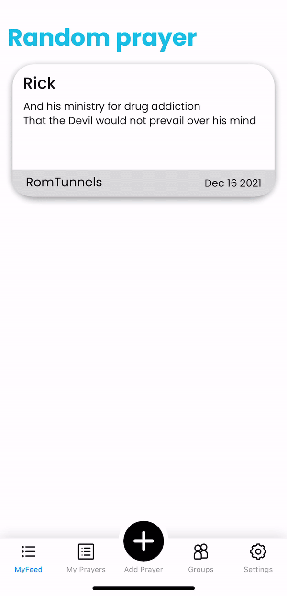
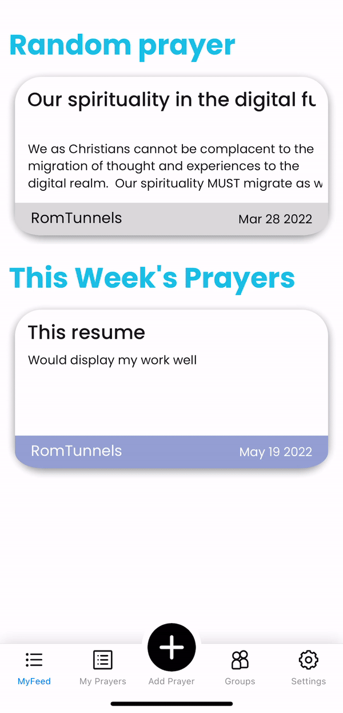

Tom Runnels' Portfolio
Here are a few notable projects, both personal and professional, in which I had some or total involvement in (and can share). This list will be updated over time and hopefully provide a comprehensive view of my experience.
Software Development
Problem
For months, I struggled with the idea that so many of Christians (myself more than anyone) struggled to live an organized and disciplined prayer life. I knew prayer was such an integral part to a Christian's relationship with God - if not THE MOST integral - and yet it often fell to the wayside.
The reason it pestered me so much was because the solution was such a proven benefit of technology. Some of the first computer systems were built around the storing and organizing of data, and with the popularization of social media and smartphones, that data could be instantly accessible and sharable from anywhere. I was surprised to see that very few solutions existed for this problem.
Approach
In brainstorming, it became clear that this would not be a simple project, but one that needed to be designed intentionally around prayer itself and what users expect in their prayer lives. With the right care and attention, we could build features that help them lead oraganized and disciplined prayer lives.
To accomplish this, I put together a small team. We crafted research questions and conducted a number of interviews with people in our target demographic. After, we were able to empathize and ideate around our users' needs, expecations, and pain points.
With this information, we moved into the feature and UX design phase, where we take what we've learned and craft the experience we believe will be the most valuable. After some prototyping and tweaking, we should be able roll out a significant update to our users that vastly improves the experience.
Progress
The platform has been in it's MVP stage for some time now. It's being hosted using a servereless architecture in AWS, to ensure its reliable and scalable. I've been keeping a close relationship with my first users, and will soon roll out the new redesigned UX and feature-set. Even though this first pass through the design process is coming to an end, we are sensitive to the feedback and data we recieve to start the process of empathizing, designing, and testing again.
UX Examples
Onboarding

Prayer Creation
Prayer Updates
Hannah's Home Auction App - Full Stack App

Challenge
For organizations who rely on live events, the 2020 pandemic was a unexpected and ground shaking problem. For many, solving this problem means life or death
In the case of non-profits, these problems have even more constraints. Cost, time, and scope are very tight, and solutions need to be designed around the existing relationships between organization and patron.
Approach
ForwardTech approached this problem for Hannah's Home of South Florida with a full software solution. The annual fundraiser was coming up in just two months, and the live auction portion of the night is the main event. Since the event was only going to have a limited audience, engaging the audience further was the original goal. We sought out to create a software solution consisting of a mobile app, a projector screen, operating tools for the night of the event, and a cloud-based backend to save the data collected.
As architecting the project progressed, however, we were able to identify other benefits and features within the project scope that would turn the event from a down-year to the best one yet. Not only could donors now bid on items anonymously, but - by leveraging cloud-based infrastructure - from the comfort and safety of their home. Hannah’s Home could now include more people than ever at their fundraising event.
Mobile App
The mobile app, or Hannah's Home Auction App, is the main customer-facing competent of the system. This is how customers register themselves into the system and bid against one another live or at home. Since Hannah’s Home values the strong relationship between them and their patrons, we took careful consideration when designing the UX of the app, even consulting external UX designers to ensure the experience was best catered to our audience.
Projector
What is displayed on the projector, or the Projector Screen, is also an important component of the solution. Since the event was still taking place, the app needed to compliment the live energy of the night, not weight it down. This was a critical constraint that we acknowledged from day one.
Backend
The server system behind the App and Projector needed to be reliable, efficient, and available. In order to set up an infrastructure like this in such a short time, we took advantage of the tools and API’s provided by Amazon Web Services. We were able to setup a scalable NoSQL database, a GraphQL API to interface with it, and a secure authentication system completely in the cloud.
Glenwood Oil and Gas - Front End App
Problem
While at Stimulus, one of our clients apporached us with the desire for a mobile app. As the only one in the office with development experience, the task fell to me. But after much research and failed attempts, I grew very dissatistfied with the online app builder tools availble. While I knew nothing of React Native, I knew that I could learn it quickly, and it would be the technical challange I was yerning for at a not-so-technical company. After creating a prototype over the weekend, I presented it to my boss and was given the okay to begin developing the Glenwood App.
Results
The result is a simple, but good looking mobile app developed solely by me. While it may not be the most impressive or complex app, it is something that I can be proud of, and I certainly leared a number of lessons along the way. In this project I self-taught React Native. I exposed myself to the world of React modules and Node.js. I even had to configure build settings, go through the process of App Store and Play Store deployment, and submit updates to each (after discovering a bug... oops)
Web Development
Full Website Redesign & Development
Design & Implementation
In a matter of weeks, TFBC had to go from little online presence to a digital-only church. We took the logo and color scheme and built a brand and website. From there, we were able to set up the platforms for live-streaming and on-demand sermons. As things normalize, we're adapting and updating the site to continue to reflect the status and mission of the church
Maintence and Documentation
For the good of the church, I never wanted to be critical to the survival of the website. To meet the needs of the church's different ministries, I found it best that the leaders were capable of making at least small edits to the content of the website. This meant producing a series of documents outlining the workflow of a few popular use-cases and walking different staff members through hands-on training.
Part time Web Developer
Design & Implementation
As a small agency, each employee must wear many hats. Because of this, even in my short time I have had a role in every part of the web development life cycle. While these sites are team-efforts, there are some that just have more of my fingerprints than others. Working with the Joomla CMS has been enjoyable too; you can get a site up and running quickly, but can also add lots of features and functionalities, as I have learned dealing with the many templates, plugins, and extensions to be found online.
Full Cycle experience
The two websites pictured here are two clients of Stimulus. These sites are important to my portfolio not only because I was extreamly involved in both of their developments, but because I was involved from start to finish. We began each by finding a fitting template, setting them up on our hosting service, coordinating with the photographer and the graphic designer on what we would need, and then shaping them into what you see today. Each went through many revisions, and we sent the client multiple demos for feedback. In the end, they are the two biggest and most proud sites I worked on at Stimulus.
Manager Review
"Tom is a bright individual who is not afraid to face new challenges. I was very impressed with his ability to come in and shift his focus to work on projects that weren't completely in his comfort zone. Tom has a great personality and I am sure he will do well wherever he goes next!
Benton Evans
Operations Manager at Stimulus Advertising
Database
Private Architecture Firm - Accounting Database Migration
Problem
transfer From old to new
This architecture firm had just purchased a new accounting software, one more tailored to the A/E world than their previous software. However, there was no solution to transferring the valuable information from their previous accounting system (including Clients, Vendors, and most importantly Projects) to their new system. Given the nature of the project, as a one-off and specific problem, the firm was not interested in hiring or training one of their existing employees in the theory and tools of relational databases.
Solution
getting hands on
Through a mutual connection, we were able to meet via remote meetings and get the project started relatively quickly. Soon enough I had my hands on both the old and the new database, and was able to start reverse engineering their database schema's to understand how the new system expected to see the data from the old. As I worked, every note, script, and headache was recorded so that after some time I was able to create a set of sequential scripts that would not only transfer the data accordingly, but also check for and handle inconsistencies. These scripts allowed us to do a number of passes of the data at different times, so that some departments of the firm could get started using the new system while others still needed time to prepare. Overall, the project was very unique and hands-on, but very valuable to the client.
Relational Database Design & Implementation

Phase 1
Design
Given a hypothetical medical supplies company seeking to transfer their poorly formatted data from Excel into a Microsoft SQL Server relational database, the first step of this project was to design an Entity Relationship Diagram (ERD) that would identify all entities and appropriately represent the relationships between them. After creating the ERD, I translated it into SQL to create the structure of the database that would hold all of the data for this company.

Phase 2
Data Manipulation & Insertion
Over 75,000 rows of data were provided for this project in an Excel workbook. The original data included misspellings, repeated data, empty rows, and other inconsistencies that rendered it incompatible with the SQL database created in phase 1. Thus, phase 2 focused on cleaning the data and reformatting it to eliminate any inconsistencies. After the Excel data was satisfactory, it was transferred into Microsoft Access which was used as a gateway to SQL Server and also allowed for final data touch-ups.

Phase 3
Querying the Database
After Inserting all of the data from Microsoft Access into SQL Server, 36 queries were performed on the data to provide valuable information to the company. Due to the ERD design and data manipulation, the database can now be used to find specific rows based on many conditions which would have been impossible given the original data set.
Game Development
Skiii Mobile Game
Inspiration
My freshman year of college, I knew I wanted to make a game. Since I was a freshman living on the dorm, I was meeting new people every day, so I knew I wanted something easy and accesible that anyone could play. That led to the dicision to do mobile. Then I looked at past games that people liked to play, and thought about what they had in common. From that, I knew I wanted something quick, challenging, and arcade-y. Considering my fascination with the games industry at the time, I also decided to use Unity as the engine to gain some expereince.
Results
After a few weeks of C#, pixel art, and editing royalty free sound effects, Skiii was complete. It's a high score chaser where you pass through flags to earn points, and lose if you miss one. Since it was relativly early in my programming career there wasn't much to the code itself, but looking back I was concious of things like memory management and made use of file manipulation, even though I hadn't learned those proper yet. Skiii is definately something I am proud of, and get to look back, play it sometimes, and laugh. You can check it out on the Google Play Store